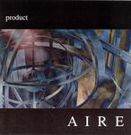

| Artist: | Product |
| Title: | Aire |
| Label: | Cyclops CYCL 134 |
| Length(s): | 73 minutes |
| Year(s) of release: | 2003 |
| Month of review: | [02/2004] |
| 1) | City Of Gold | 5.44 |
| 2) | Age Of Reason | 3.59 |
| 3) | Mighty Maze | 4.35 |
| 4) | Here Comes Tomorrow | 4.17 |
| 5) | Still Here | 4.00 |
| 6) | Value Of Gold | 5.16 |
| 7) | Wonderful Dreamers | 1.40 |
| 8) | Other Worlds | 5.31 |
| 9) | Everyday Business | 4.00 |
| 10) | Autumn | 3.46 |
| 11) | Beyond All Reason | 4.47 |
| 12) | Angels | 2.11 |
| 13) | Black Is The Day | 4.46 |
| 14) | Fall | 5.29 |
| 15) | The Calling | 4.43 |
| 16) | Last Word | 3.39 |
| 17) | Breathing | 4.57 |
None of the tracks is very long, staying away from the traditional epics. This could be construed as a more poppy approach, which is more or less true as far the build up of songs is concerned, yet the complexity of the songs, both rhythmically and melodically easily demonstrates the opposite. Apart from that, such tracks as Value Of Gold smoothly demonstrate that there is room for build up and climaxing within five minutes (hey, focus, I'm talking about music here). Having said all that, this album is something of a concept album, devided into two acts. This is reflected in the fact that the songs are well integrated, the album feels more like "an album" than it does like the collection of songs most albums are.
Boyles voice is full and easily brings across any emotions. This suppleness in performance is displayed in other aspects too, never does the music sound as if compromises were made. It sounds very much like it was played the way it was intended.